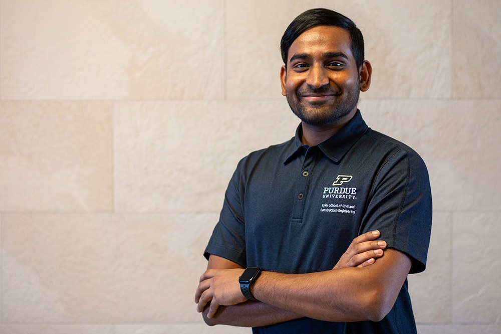

476
Citations
TRANSPORTATION RESEARCH ENGINEER · PURDUE UNIVERSITY · WEST LAFAYETTE, IN
Engineering safer, smarter transportation.
I'm a Transportation Research Engineer who pairs civil-engineering fundamentals with emerging technology — turning research into performance measures, teaching, and tools that agencies actually use, from traffic safety and work zones to winter operations.
